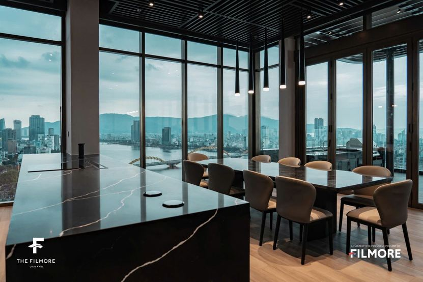

Building guides
Who Is The Filmore Da Nang Right For?
Bài viết này hiện chỉ có bản tiếng Anh. Menu và phần điều hướng đã chuyển sang tiếng Việt. Alice nói tiếng Việt và tiếng Anh, nhắn tin cho cô nếu bạn cần giải thích bằng tiếng Việt.
Key takeaways
- The Filmore suits people who want to live in the middle of the city with a river view, not people who want to walk to the beach. My Khe is about 2.7 km away, roughly an 8 minute drive.
- It is a small building. 206 apartments across 25 floors, finished in 2024, which means quiet corridors and none of the short-stay churn you get in the beach towers.
- Best fit is a professional or executive on a six to twelve month lease. One bedroom units run 48 to 51 m², so large families are the wrong match. The building has only four three bedroom apartments in total.
- If your daily routine involves sand and surf, rent in An Thuong or Son Tra instead and save the money.
What is The Filmore Da Nang?
The Filmore is a 25 storey residential tower on Bach Dang street, the riverfront road in Hai Chau, sitting on the Han River between the Dragon Bridge and the Tran Thi Ly Bridge. It was completed in 2024 by Filmore Real Estate Development and holds 206 apartments in total.
The number matters more than it sounds. Most new towers in Da Nang hold five or six hundred units. At 206 you get lifts that arrive, corridors that are empty, and neighbours who actually live there rather than rotating every four nights.
Layouts run from one bedroom units of roughly 48 to 51 m² up to three bedroom apartments of about 123 m², with a handful of larger corner units. Facilities include a rooftop pool with the river below it, a gym, a sauna, concierge, and three basement parking levels.
Who does it suit best?
Expat executives. If you are here on a company posting and your office is in Hai Chau, Filmore puts you a few minutes from work with a view worth coming home to. The building is professionally managed, which means someone answers when something breaks. That is not standard in Da Nang.
Business owners. People who host clients, take calls at odd hours, and want an address that says something when they hand over a card. The lobby and the common areas do a lot of that work for you.
Professional couples. Two people, both working. The one and two bedroom layouts were designed for exactly this, and the location means neither of you commutes far to anything.
Foreign investors. Filmore has the two things that hold value in Da Nang. Riverfront position in the centre, and low unit count. Beach towers compete with each other on rent every season. There is very little land left on Bach Dang.
Senior remote workers. Not the backpacker with a laptop. The person earning a Western salary who wants fast internet, a real desk, a gym downstairs and no roosters at 5am. Filmore delivers that.
Six to twelve month tenants. The building rewards commitment. Landlords here prefer longer leases, and the rate you get on twelve months is meaningfully better than on three.
People who want to be in the centre. Han Market, the river promenade, the restaurants along Bach Dang and the ferry across to the east bank are all outside the door. You are living in the city rather than in the tourist strip beside it.
People who care about design. The interiors run to floor-to-ceiling glazing on the river side, dark hardwood and stone finishes, and layouts that keep the living space facing the water and the bedrooms tucked behind it. If you have spent time looking at Da Nang apartments and found them all a bit flat, this is the one that will register.
People who want a river view. This is the whole point of the building. On upper floors you get the Dragon Bridge, the bend of the Han, and the city lights across the water.
Tenant fit at a glance
This is the shortlist I run through before booking a viewing here, because Filmore is a building people either fit immediately or do not fit at all.
| Tenant type | Fit | Why |
|---|---|---|
| Expat executive | Excellent | Close to Hai Chau offices, managed building, address carries weight |
| Business owner | Excellent | Presentable for clients, central, secure parking |
| Professional couple | Excellent | 1BR and 2BR layouts fit two people well |
| Foreign investor | Excellent | Riverfront centre, only 206 units, limited supply on Bach Dang |
| Senior remote worker | Very good | Fast internet, gym, quiet floors, real workspace |
| 6 to 12 month tenant | Very good | Best rates and first pick of units go to longer leases |
| Design-led renter | Very good | Strongest interiors in the central Da Nang rental market |
| Beach-first renter | Poor | 2.7 km to My Khe, so the beach becomes a trip rather than a habit |
| Budget renter | Poor | You are paying for the river and the management, both of which cost |
| Stay under 3 months | Poor | Short terms are priced badly here, if available at all |
Who should not rent here?
Anyone whose day starts on the sand. The beach is a short drive, and a short drive is enough friction that most people stop going. If swimming before work is the reason you moved to Da Nang, rent in An Thuong or Son Tra and put the difference in your pocket.
Anyone who needs three bedrooms on a fixed timeline. There are only four three bedroom apartments in the entire building, so they come to market perhaps a few times a year. If you need that much space by a certain date, a house on the east bank is the realistic option.
Anyone chasing value per square metre. Filmore is priced on location, management standard and the view. Those are real things, but you can rent more space for less money almost anywhere else in the city.
People who want a walkable Western food scene at the door. That is An Thuong. Bach Dang has excellent Vietnamese food and a handful of good restaurants, but the concentration of cafes, gyms and coworking spaces that expats gravitate toward is on the other side of the river.
What is the building like to live in?
Quiet, which surprises people given the location. The low unit count does most of it, and the glazing handles the rest.

The one genuine noise event is the Dragon Bridge. It breathes fire and water on Saturday and Sunday nights around 9pm, and the streets around it clog with traffic beforehand. From the upper floors this is entertainment. At street level on a weekend evening, it is a reason to walk rather than drive.
Facilities are on the rooftop, and the pool up there with the river underneath it is the single best thing about the building. The gym is adequate rather than serious, so if you train properly you will still want a membership elsewhere.
Parking sits across three basement levels. What a lease covers is set by each owner rather than by the building, so parking, the management fee and wifi may or may not be included depending on the apartment. Get all three written into the contract instead of assuming, and check how many car and motorbike spaces come with the unit.
Where does it sit in the city?
| Destination | Distance | Time |
|---|---|---|
| Da Nang International Airport | 2.4 km | About 10 minutes |
| My Khe Beach | 2.7 km | About 8 minutes |
| Dragon Bridge | 1.7 km | 5 minutes by bike |
| Han Market | Walking distance | Under 10 minutes on foot |
| Han River Night Market | 1.1 km | 5 minutes |
| Hoi An Ancient Town | About 30 km | Around 40 minutes |
The airport being ten minutes away is underrated. If you fly monthly for work, that alone can justify the location over anywhere on the beach strip.
Is it worth it for investors?
The case rests on scarcity. Bach Dang is the riverfront boulevard in the middle of the city, the plots are small, and there is not much room left to build. A 206 unit building on that street does not get repeated easily.
The rental side is steadier than the beach towers, which fill in high season and sit half empty in October. Central buildings draw executives and long stay tenants who sign for a year and renew, so occupancy is flatter across the calendar.
Worth being straight about the limits. Yields on luxury units in Da Nang are lower than on mid-market apartments, because the purchase price climbs faster than the rent does. Foreign buyers also face the standard Vietnamese ownership restrictions, including the 50 year term and the cap on foreign owned units per building. Get legal advice specific to your situation before committing, since the rules apply per project.
Frequently asked questions
Is The Filmore Da Nang good for expats?
Yes, particularly for working professionals and executives based in the city centre. It offers professional building management, secure parking and a central riverfront location, all of which suit longer stays. It is a weaker choice for people who want to live next to the beach.
How many apartments are in The Filmore Da Nang?
There are 206 apartments across 25 floors. That is a low unit count for a Da Nang tower, which keeps the corridors quiet and the lifts fast, and it means very few units come available for rent at any given time.
How far is The Filmore Da Nang from the beach?
My Khe Beach is about 2.7 km away, roughly an 8 minute drive across the Han River. It is close enough for a weekend trip but far enough that the beach will not become part of your daily routine.
Does The Filmore Da Nang have a swimming pool?
Yes, there is a pool on the rooftop overlooking the Han River, along with a gym, a sauna and concierge service. Whether facility access is covered by your rent depends on the individual lease, so confirm it with the owner.
When was The Filmore Da Nang completed?
The building was completed in 2024 by Filmore Real Estate Development. It is one of the newest luxury residential towers in central Da Nang.
Can foreigners buy an apartment at The Filmore Da Nang?
Foreigners can buy apartments in Vietnam subject to a 50 year ownership term and a cap on the percentage of units in any building that may be foreign owned. Whether units remain available under that cap changes over time, so check the current position for this specific building before making an offer.
Is parking included at The Filmore Da Nang?
The building has three basement parking levels, but whether parking is included depends on the individual apartment and owner rather than on the building. The same applies to the management fee and wifi. Have all of it written into the contract before signing, along with the number of car and motorbike spaces allocated to the unit.